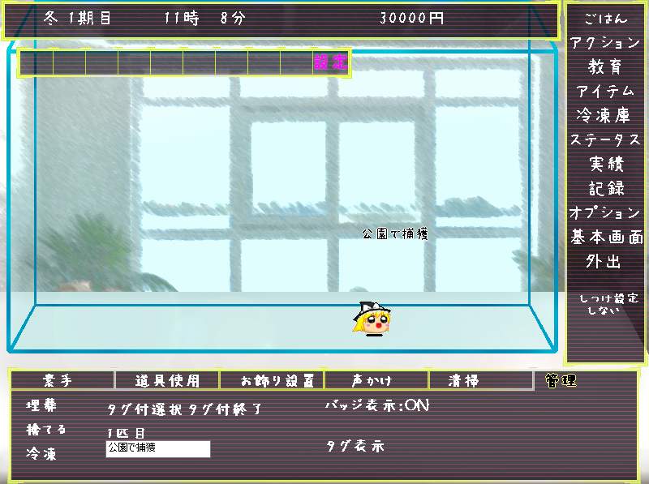

◆管理◆
埋葬……ゆっくりを裏庭に埋葬します。
簡素なお墓が立ちます。
捨てる……ゆっくりを廃棄します。
ゴミとして捨てしまうので、痕跡は残りません。
タグ付け選択……ゆっくりにタグ付けを行います。デフォルトではゆっくりの入手場所になっています。
バッジ表示……匹数orタグ表示の横に取得しているバッジを表示させます。
タグ表示or匹数表示……ゆっくりの頭上の文字を匹数表示かタグ表示かを切り替えます。
■アクショントップへ戻る■
マニュアルトップへ戻る